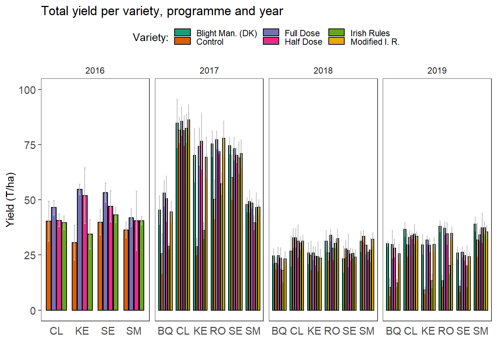

Yield analysis
Yield analysis
Load packages
list.of.packages <-
c(
"tidyverse",
"devtools",
"egg",
"hrbrthemes",
"sjPlot",
"effects",
"lsmeans",
"multcomp",
"multcompView",
"ggpubr",
"conflicted",
"lmerTest",
"hnp"
)
new.packages <-
list.of.packages[!(list.of.packages %in% installed.packages()[, "Package"])]
#Download packages that are not already present in the library
if (length(new.packages))
install.packages(new.packages)
packages_load <-
lapply(list.of.packages, require, character.only = TRUE)
#Print warning if there is a problem with installing/loading some of packages
if (any(as.numeric(packages_load) == 0)) {
warning(paste("Package/s: ", paste(list.of.packages[packages_load != TRUE], sep = ", "), "not loaded!"))
} else {
print("All packages were successfully loaded.")
}
rm(list.of.packages, new.packages, packages_load)
#if instal is not working try
#install.packages("ROCR", repos = c(CRAN="https://cran.r-project.org/"))Data import
yld <- read_csv(here::here("data", "yield", "yield.csv"))
yld <- yld %>%
mutate_each_(funs(factor(.)), c("year", "variety", "treatment"))Initial visualisations.
ggpubr:: ggboxplot(yld, x = "variety", y = "marketable",facet.by = "year", color = "treatment",palette = "Dark2")
# Two-way interaction plot
interaction.plot(x.factor = yld$treatment, trace.factor = yld$variety,
response = yld$marketable, fun = mean,
type = "b", legend = TRUE,
xlab = "", ylab="Yield",
pch=c(1,19), col =palette(rainbow(6)))
yldmean <-
yld %>%
group_by(year, variety, treatment) %>%
summarise_at(.vars = c("marketable"), .funs = c(mean), na.rm = TRUE) %>%
reshape2::melt(
id.vars = c("year", "variety", "treatment"),
variable.name = "yld_class",
value.name = "mean"
)
yldsd <-
yld %>%
group_by(year, variety, treatment) %>%
summarise_at(.vars = c( "marketable"), .funs = c(sd), na.rm = TRUE) %>%
reshape2::melt(
id.vars = c("year", "variety", "treatment"),
variable.name = "yld_class",
value.name = "sd"
) tit <- "Total yield per variety, programme and year"
left_join(yldmean, yldsd, by = colnames(yldmean)[1:4]) %>%
mutate_each_(funs(factor(.)),c("year","variety", "treatment")) %>%
ggplot(., aes(
x = variety,
y = mean,
fill = treatment,
group = treatment
)) +
geom_bar(
color = "black",
stat = "identity",
position = position_dodge(.8),
width = 0.7
) +
geom_errorbar(aes(ymin = mean - sd,
ymax = mean + sd),
position = position_dodge(.8),
width = 0.25,
color = "gray") +
facet_grid(~year, scales = "free")+
scale_fill_brewer("Variety:", palette = "Dark2") +
theme_article() +
scale_y_continuous(limits = c(0, 100), breaks = seq(0, 100, 25)) +
labs(x = "",
y = "Yield (T/ha)",
title = tit) +
theme(
axis.title = element_text(size = 11),
panel.grid.major = element_blank(),
panel.grid.minor = element_blank(),
axis.text = element_text(size = 11),
legend.position = "top",
# axis.text.x = element_blank(),
axis.ticks.x = element_blank()
) +
ggsave(filename= here::here("results", "yield", paste0(tit, ".png")),
width = 10, height = 5,
dpi = 320)
Model fitting
fit2016 <- lme4::lmer(marketable ~
block + treatment * variety + (1 | block:treatment),
data=subset(yld, year==2016)
)
hnp::hnp(fit2016)## Linear mixed-effects model (using lme4)
plot(fit2016)
car::Anova(fit2016)fit <- lme4::lmer(marketable ~
block :year + year * treatment * variety +
(1 | block:treatment:year),
data=subset(yld, year!=2016)
)
plot(fit)hnp::hnp(fit)## Linear mixed-effects model (using lme4)
car::Anova(fit)posthoc<-
emmeans:: lsmeans(fit2016, pairwise ~ treatment * variety, adjust="tukey", type = "response")
d2016 <-
cld(posthoc[[1]],
alpha =.05,
Letters=letters)
d2016 <-
d2016 %>%
tbl_df() %>%
unite( "pairs", variety, treatment, sep = ":",remove= FALSE )
d2016$.group <- trimws(d2016$.group)
d2016$pairs <-
factor(d2016$pairs, levels = d2016$pairs[order(d2016$lsmean)])
ggplot(d2016, aes(x=pairs, y = lsmean, colour = treatment))+
geom_errorbar(aes(ymin=lower.CL, ymax=upper.CL), width=.2)+
geom_point(size = .1)+
scale_color_brewer("Programme:", palette = "Dark2") +
labs(x=" ", y="CI")+ coord_flip()+
geom_text(
aes(label = .group),
vjust = -0.5,
hjust = 0.3,
color = "black",
position = position_dodge(0.9),
size = 2
) +
theme_bw()+
ggsave(filename= here::here("results", "yield", "pairwise comparisons 2016.png"),
width = 7, height = 2.5, dpi = 620)
posthoc<- emmeans:: lsmeans(fit, ~treatment * variety *year, adjust="tukey", type = "response")
drest <- posthoc
drest <-
cld(posthoc,
alpha = .05,
Letters=letters,
adjust = "Bonferroni")
drest <-
drest %>%
tbl_df() %>%
unite( "pairs", variety, treatment, year, year, sep = ":",remove= FALSE )
drest$pairs <-
factor(drest$pairs, levels = drest$pairs[order(drest$lsmean)])
drest$.group <- trimws(drest$.group)
ggplot(drest, aes(x=pairs, y = lsmean, colour = treatment))+
geom_errorbar(aes(ymin=lower.CL, ymax=upper.CL), width=.2)+
geom_point(size = .1)+
scale_color_brewer("Programme:", palette = "Dark2") +
labs(x=" ", y="CI")+ coord_flip()+
geom_text(
aes(label = .group),
vjust = -0.5,
hjust = 0.3,
color = "black",
position = position_dodge(0.9),
size = 2
) +
theme_bw()+
theme(axis.text.y = element_text(size = 8))+
ggsave(filename= here::here("results", "yield", "pairwise comparisons.png"),
width = 7, height = 11.5, dpi = 420)
d2016$year <- factor(2016)
d1 <-
dplyr::bind_rows(d2016, drest)
yld <-
yld %>%
ungroup() %>%
mutate(treatment = ifelse(treatment == "Control", "Untreated Control",
ifelse(treatment == "Full Dose" , "Full dose (100)",
ifelse(treatment == "Half Dose", "Half dose (50)",
ifelse(treatment == "Irish Rules", "Irish Rules (IRp)",
ifelse(treatment == "Blight Man. (DK)", "Blight Man. (BMp)",
ifelse(treatment == "Modified I. R.", "Modified I. R. (MIRp)", "")))))))
yld$treatment <-
factor(yld$treatment,
levels = c("Untreated Control", "Full dose (100)","Half dose (50)","Irish Rules (IRp)","Blight Man. (BMp)" ,"Modified I. R. (MIRp)"))
d1 <-
d1 %>%
ungroup() %>%
mutate(treatment = ifelse(treatment == "Control", "Untreated Control",
ifelse(treatment == "Full Dose" , "Full dose (100)",
ifelse(treatment == "Half Dose", "Half dose (50)",
ifelse(treatment == "Irish Rules", "Irish Rules (IRp)",
ifelse(treatment == "Blight Man. (DK)", "Blight Man. (BMp)",
ifelse(treatment == "Modified I. R.", "Modified I. R. (MIRp)", "")))))))
d1$treatment <-
factor(d1$treatment,
levels = c("Untreated Control", "Full dose (100)","Half dose (50)","Irish Rules (IRp)","Blight Man. (BMp)" ,"Modified I. R. (MIRp)"))
d1 <-
d1 %>%
mutate(variety = factor(variety, levels =c("KE","BQ", "RO", "SE", "CL","SM"))) %>%
mutate(year = factor(year, levels =c("2016","2017", "2018", "2019")))
saveRDS(d1, file = here::here("results", "yield", "yld_fin.RDS"))
saveRDS(yld, file = here::here("results", "yield", "yld_dat_fin.RDS"))#Set the position dodge
dodging <- .8
p_fin <-
d1 %>%
mutate(
line_positions = as.numeric(factor(variety, levels = unique(variety))),
line_positions = line_positions + .5,
line_positions = ifelse(line_positions == max(line_positions), NA, line_positions),
line_positions = ifelse(year == 2016 &
variety == "SM", 5.5, line_positions),
line_positions = ifelse(year == 2016 &
variety == "SE", 4.5, line_positions)
) %>%
ggplot(data = ., aes(x = variety, y = lsmean)) +
geom_errorbar(
aes(
ymin = lower.CL,
ymax = upper.CL,
group = treatment,
color = treatment
),
position = position_dodge(width = dodging),
width = .2
) +
geom_point(
aes(y = lsmean, group = treatment, color = treatment),
size = 1,
shape = 2,
position = position_dodge(width = dodging)
) +
facet_wrap(~ year, nrow = 1) +
geom_point(
data = yld,
aes(y = marketable, color = treatment, group = treatment),
size = .2,
alpha = .5,
position = position_dodge(width = dodging)
) +
scale_color_brewer("Programme:", palette = "Dark2") +
theme_article() +
theme(legend.position = "top") +
geom_vline(aes(xintercept = line_positions),
size = .2,
alpha = .6) +
labs(colour = "Programme:",
x = "Variety",
y = "Yield (t per ha)")
p_finggsave(
p_fin,
filename = here::here("results", "yield", "Effects final.png"),
width = 7,
height = 3.7,
dpi = 820
)
rm(p_fin)session_info()## - Session info ---------------------------------------------------------------
## setting value
## version R version 4.0.3 (2020-10-10)
## os Windows 10 x64
## system x86_64, mingw32
## ui RTerm
## language (EN)
## collate English_United States.1252
## ctype English_United States.1252
## tz Europe/Warsaw
## date 2021-02-01
##
## - Packages -------------------------------------------------------------------
## package * version date lib source
## abind 1.4-5 2016-07-21 [1] CRAN (R 4.0.3)
## assertthat 0.2.1 2019-03-21 [2] CRAN (R 4.0.3)
## backports 1.2.1 2020-12-09 [2] CRAN (R 4.0.3)
## bayestestR 0.8.2 2021-01-26 [1] CRAN (R 4.0.3)
## boot 1.3-25 2020-04-26 [2] CRAN (R 4.0.3)
## broom 0.7.3 2020-12-16 [2] CRAN (R 4.0.3)
## cachem 1.0.1 2021-01-21 [1] CRAN (R 4.0.3)
## callr 3.5.1 2020-10-13 [2] CRAN (R 4.0.3)
## car 3.0-10 2020-09-29 [1] CRAN (R 4.0.3)
## carData * 3.0-4 2020-05-22 [1] CRAN (R 4.0.3)
## cellranger 1.1.0 2016-07-27 [2] CRAN (R 4.0.3)
## cli 2.2.0 2020-11-20 [2] CRAN (R 4.0.3)
## coda 0.19-4 2020-09-30 [1] CRAN (R 4.0.3)
## codetools 0.2-18 2020-11-04 [2] CRAN (R 4.0.3)
## colorspace 2.0-0 2020-11-11 [2] CRAN (R 4.0.3)
## conflicted * 1.0.4 2019-06-21 [1] CRAN (R 4.0.3)
## crayon 1.3.4 2017-09-16 [2] CRAN (R 4.0.3)
## curl 4.3 2019-12-02 [2] CRAN (R 4.0.3)
## data.table 1.13.6 2020-12-30 [1] CRAN (R 4.0.3)
## DBI 1.1.1 2021-01-15 [2] CRAN (R 4.0.3)
## dbplyr 2.0.0 2020-11-03 [2] CRAN (R 4.0.3)
## desc 1.2.0 2018-05-01 [2] CRAN (R 4.0.3)
## devtools * 2.3.2 2020-09-18 [1] CRAN (R 4.0.3)
## digest 0.6.27 2020-10-24 [2] CRAN (R 4.0.3)
## dplyr * 1.0.3 2021-01-15 [2] CRAN (R 4.0.3)
## effects * 4.2-0 2020-08-11 [1] CRAN (R 4.0.3)
## effectsize 0.4.3 2021-01-18 [1] CRAN (R 4.0.3)
## egg * 0.4.5 2019-07-13 [1] CRAN (R 4.0.3)
## ellipsis 0.3.1 2020-05-15 [2] CRAN (R 4.0.3)
## emmeans * 1.5.3 2020-12-09 [1] CRAN (R 4.0.3)
## estimability 1.3 2018-02-11 [1] CRAN (R 4.0.3)
## evaluate 0.14 2019-05-28 [2] CRAN (R 4.0.3)
## extrafont 0.17 2014-12-08 [1] CRAN (R 4.0.3)
## extrafontdb 1.0 2012-06-11 [1] CRAN (R 4.0.3)
## fansi 0.4.2 2021-01-15 [2] CRAN (R 4.0.3)
## farver 2.0.3 2020-01-16 [2] CRAN (R 4.0.3)
## fastmap 1.1.0 2021-01-25 [1] CRAN (R 4.0.3)
## forcats * 0.5.0 2020-03-01 [2] CRAN (R 4.0.3)
## foreign 0.8-81 2020-12-22 [2] CRAN (R 4.0.3)
## fs 1.5.0 2020-07-31 [2] CRAN (R 4.0.3)
## generics 0.1.0 2020-10-31 [2] CRAN (R 4.0.3)
## ggeffects 1.0.1 2020-12-14 [1] CRAN (R 4.0.3)
## ggplot2 * 3.3.3 2020-12-30 [2] CRAN (R 4.0.3)
## ggpubr * 0.4.0 2020-06-27 [1] CRAN (R 4.0.3)
## ggsignif 0.6.0 2019-08-08 [1] CRAN (R 4.0.3)
## glue 1.4.2 2020-08-27 [2] CRAN (R 4.0.3)
## gridExtra * 2.3 2017-09-09 [1] CRAN (R 4.0.3)
## gtable 0.3.0 2019-03-25 [2] CRAN (R 4.0.3)
## haven 2.3.1 2020-06-01 [2] CRAN (R 4.0.3)
## here 1.0.1 2020-12-13 [1] CRAN (R 4.0.3)
## hms 1.0.0 2021-01-13 [2] CRAN (R 4.0.3)
## hnp * 1.2-6 2018-05-21 [1] CRAN (R 4.0.3)
## htmltools 0.5.1.1 2021-01-22 [2] CRAN (R 4.0.3)
## httr 1.4.2 2020-07-20 [2] CRAN (R 4.0.3)
## insight 0.12.0 2021-01-14 [1] CRAN (R 4.0.3)
## jsonlite 1.7.2 2020-12-09 [2] CRAN (R 4.0.3)
## knitr 1.30 2020-09-22 [2] CRAN (R 4.0.3)
## labeling 0.4.2 2020-10-20 [2] CRAN (R 4.0.3)
## lattice 0.20-41 2020-04-02 [2] CRAN (R 4.0.3)
## lifecycle 0.2.0 2020-03-06 [2] CRAN (R 4.0.3)
## lme4 * 1.1-26 2020-12-01 [1] CRAN (R 4.0.3)
## lmerTest * 3.1-3 2020-10-23 [1] CRAN (R 4.0.3)
## lsmeans * 2.30-0 2018-11-02 [1] CRAN (R 4.0.3)
## lubridate 1.7.9.2 2020-11-13 [2] CRAN (R 4.0.3)
## magrittr 2.0.1 2020-11-17 [2] CRAN (R 4.0.3)
## MASS * 7.3-53 2020-09-09 [2] CRAN (R 4.0.3)
## Matrix * 1.2-18 2019-11-27 [2] CRAN (R 4.0.3)
## memoise 2.0.0 2021-01-26 [1] CRAN (R 4.0.3)
## minqa 1.2.4 2014-10-09 [1] CRAN (R 4.0.3)
## mitools 2.4 2019-04-26 [1] CRAN (R 4.0.3)
## modelr 0.1.8 2020-05-19 [2] CRAN (R 4.0.3)
## multcomp * 1.4-15 2020-11-14 [1] CRAN (R 4.0.3)
## multcompView * 0.1-8 2019-12-19 [1] CRAN (R 4.0.3)
## munsell 0.5.0 2018-06-12 [2] CRAN (R 4.0.3)
## mvtnorm * 1.1-1 2020-06-09 [1] CRAN (R 4.0.3)
## nlme 3.1-151 2020-12-10 [2] CRAN (R 4.0.3)
## nloptr 1.2.2.2 2020-07-02 [1] CRAN (R 4.0.3)
## nnet 7.3-14 2020-04-26 [2] CRAN (R 4.0.3)
## numDeriv 2016.8-1.1 2019-06-06 [1] CRAN (R 4.0.3)
## openxlsx 4.2.3 2020-10-27 [1] CRAN (R 4.0.3)
## parameters 0.11.0 2021-01-15 [1] CRAN (R 4.0.3)
## pbkrtest 0.5-0.1 2020-12-18 [1] CRAN (R 4.0.3)
## performance 0.6.1 2020-12-09 [1] CRAN (R 4.0.3)
## pillar 1.4.7 2020-11-20 [2] CRAN (R 4.0.3)
## pkgbuild 1.2.0 2020-12-15 [2] CRAN (R 4.0.3)
## pkgconfig 2.0.3 2019-09-22 [2] CRAN (R 4.0.3)
## pkgload 1.1.0 2020-05-29 [2] CRAN (R 4.0.3)
## plyr 1.8.6 2020-03-03 [1] CRAN (R 4.0.3)
## prettyunits 1.1.1 2020-01-24 [2] CRAN (R 4.0.3)
## processx 3.4.5 2020-11-30 [2] CRAN (R 4.0.3)
## ps 1.5.0 2020-12-05 [2] CRAN (R 4.0.3)
## purrr * 0.3.4 2020-04-17 [2] CRAN (R 4.0.3)
## R6 2.5.0 2020-10-28 [2] CRAN (R 4.0.3)
## RColorBrewer 1.1-2 2014-12-07 [2] CRAN (R 4.0.3)
## Rcpp 1.0.6 2021-01-15 [2] CRAN (R 4.0.3)
## readr * 1.4.0 2020-10-05 [2] CRAN (R 4.0.3)
## readxl 1.3.1 2019-03-13 [2] CRAN (R 4.0.3)
## remotes 2.2.0 2020-07-21 [1] CRAN (R 4.0.3)
## reprex 0.3.0 2019-05-16 [2] CRAN (R 4.0.3)
## reshape2 1.4.4 2020-04-09 [1] CRAN (R 4.0.3)
## rio 0.5.16 2018-11-26 [1] CRAN (R 4.0.3)
## rlang 0.4.10 2020-12-30 [2] CRAN (R 4.0.3)
## rmarkdown 2.6 2020-12-14 [2] CRAN (R 4.0.3)
## rprojroot 2.0.2 2020-11-15 [2] CRAN (R 4.0.3)
## rstatix 0.6.0 2020-06-18 [1] CRAN (R 4.0.3)
## rstudioapi 0.13 2020-11-12 [2] CRAN (R 4.0.3)
## Rttf2pt1 1.3.8 2020-01-10 [1] CRAN (R 4.0.3)
## rvest 0.3.6 2020-07-25 [2] CRAN (R 4.0.3)
## sandwich 3.0-0 2020-10-02 [1] CRAN (R 4.0.3)
## scales 1.1.1 2020-05-11 [2] CRAN (R 4.0.3)
## sessioninfo 1.1.1 2018-11-05 [1] CRAN (R 4.0.3)
## sjlabelled 1.1.7 2020-09-24 [1] CRAN (R 4.0.3)
## sjmisc 2.8.6 2021-01-07 [1] CRAN (R 4.0.3)
## sjPlot * 2.8.7 2021-01-10 [1] CRAN (R 4.0.3)
## sjstats 0.18.1 2021-01-09 [1] CRAN (R 4.0.3)
## statmod 1.4.35 2020-10-19 [1] CRAN (R 4.0.3)
## stringi 1.5.3 2020-09-09 [2] CRAN (R 4.0.3)
## stringr * 1.4.0 2019-02-10 [2] CRAN (R 4.0.3)
## survey 4.0 2020-04-03 [1] CRAN (R 4.0.3)
## survival * 3.2-7 2020-09-28 [2] CRAN (R 4.0.3)
## testthat 3.0.1 2020-12-17 [2] CRAN (R 4.0.3)
## TH.data * 1.0-10 2019-01-21 [1] CRAN (R 4.0.3)
## tibble * 3.0.5 2021-01-15 [2] CRAN (R 4.0.3)
## tidyr * 1.1.2 2020-08-27 [2] CRAN (R 4.0.3)
## tidyselect 1.1.0 2020-05-11 [2] CRAN (R 4.0.3)
## tidyverse * 1.3.0 2019-11-21 [2] CRAN (R 4.0.3)
## usethis * 2.0.0 2020-12-10 [1] CRAN (R 4.0.3)
## vctrs 0.3.6 2020-12-17 [2] CRAN (R 4.0.3)
## withr 2.4.0 2021-01-16 [2] CRAN (R 4.0.3)
## xfun 0.20 2021-01-06 [2] CRAN (R 4.0.3)
## xml2 1.3.2 2020-04-23 [2] CRAN (R 4.0.3)
## xtable 1.8-4 2019-04-21 [1] CRAN (R 4.0.3)
## yaml 2.2.1 2020-02-01 [2] CRAN (R 4.0.3)
## zip 2.1.1 2020-08-27 [1] CRAN (R 4.0.3)
## zoo 1.8-8 2020-05-02 [1] CRAN (R 4.0.3)
##
## [1] C:/Users/mlade/Documents/R/win-library/4.0
## [2] C:/Program Files/R/R-4.0.3/library